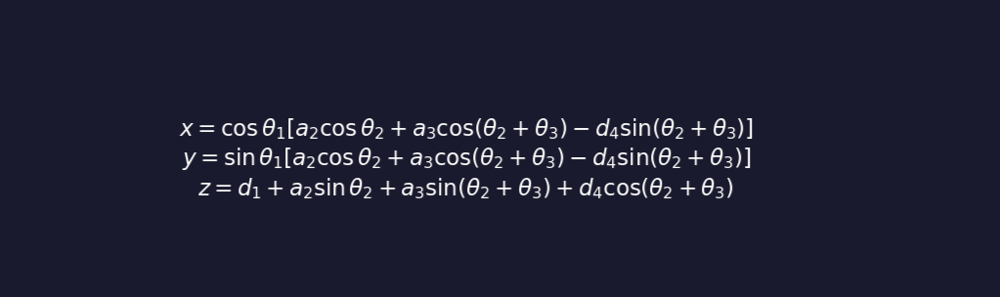

Forward & Inverse
Kinematics
Understanding how joint angles translate to end-effector pose (FK) and how to compute the required joint angles for a desired position and orientation (IK) in the FR5-V6.0 6-axis manipulator.
Coordinate Frames & Denavit-Hartenberg Parameters
The Denavit-Hartenberg (DH) convention provides a systematic method to attach coordinate frames to each joint of a robot manipulator. For the FR5-V6.0 with 6 revolute joints, we define four parameters for each link: joint angle θ, link offset d, link length a, and joint twist α.

Figure 1: 6-DOF arm with coordinate frames attached at each joint per DH convention
θ (theta) — Joint Angle
Rotation angle about the z-axis of the previous frame, measured from the x-axis of the previous frame to the x-axis of the current frame. This is the variable that changes when the joint rotates.
For revolute joints (all joints in FR5-V6.0), θ is the joint variable.
d — Link Offset
The offset along the z-axis of the previous frame between the origin of the previous frame and the intersection of the z-axis with the x-axis of the current frame.
This parameter is constant for revolute joints.
a — Link Length
The perpendicular distance from the z-axis of the previous frame to the origin of the current frame. This is the "reach" of each link.
α (alpha) — Link Twist
The rotation angle about the x-axis of the current frame, rotating from the z-axis of the previous frame to the z-axis of the current frame.
FR5-V6.0 DH Parameters
Figure 2: Visual representation of DH parameter relationships
| Joint i | θᵢ (°) | dᵢ (mm) | aᵢ (mm) | αᵢ (°) | Joint Range |
|---|---|---|---|---|---|
| 1 | θ₁ | 168 | 0 | 0 | ±175° |
| 2 | θ₂ − 90 | 0 | 260 | +90 | ±130° |
| 3 | θ₃ | 0 | 260 | 0 | ±135° |
| 4 | θ₄ | 105 | 0 | +90 | ±175° |
| 5 | θ₅ | 0 | 0 | −90 | ±105° |
| 6 | θ₆ | 105 | 0 | 0 | ±360° |
Link 1: d₁ = 168 mm (base height from mounting surface to J2)
Link 2: a₂ = 260 mm (upper arm length)
Link 3: a₃ = 260 mm (forearm length)
Link 4: d₄ = 105 mm (wrist offset)
Link 6: d₆ = 105 mm (flange to tool center point)
Forward Kinematics (FK)
What is Forward Kinematics?
Forward kinematics computes the position and orientation of the robot's end-effector given the joint angles. For a 6-axis robot like the FR5-V6.0, this means calculating a 4×4 homogeneous transformation matrix that represents the pose of the tool flange relative to the base frame.
The transformation matrix combines the effects of all six joint rotations:
Figure 3: How joint angles propagate through the kinematic chain to produce end-effector pose
T⁰₆ = T⁰₁(θ₁) × T¹₂(θ₂) × T²₃(θ₃) × T³₄(θ₄) × T⁴₅(θ₅) × T⁵₆(θ₆)
Homogeneous Transform
Each link transformation Tⁱ⁻¹ᵢ is a 4×4 matrix combining rotation about z (by θᵢ) and translation:
- Rotation: cos(θᵢ) and sin(θᵢ)
- Translation along z: dᵢ
- Translation along x: aᵢ
- Twist about x: αᵢ
Why FK Matters
Forward kinematics is essential for:
- Validating joint positions against sensor data
- Converting robot coordinates to world coordinates
- Visualization and simulation of robot configuration
- Path planning in task space coordinates
Inverse Kinematics (IK)
What is Inverse Kinematics?
Inverse kinematics solves the inverse problem: given a desired end-effector pose (position + orientation), compute the joint angles that achieve it. This is fundamental to robot programming — you specify where you want the tool to go, and IK tells you how to position each joint.
Unlike FK, IK typically has multiple (up to 8 for a 6R robot) or no solutions. The FR5-V6.0 uses a geometric IK solver that handles the 6 revolute joints.
Figure 4: Geometric interpretation showing elbow-up and elbow-down IK configurations
Geometric Approach
The FR5-V6.0's kinematic structure can be analyzed geometrically:
- J1 rotation positions the arm azimuthally
- J2 and J3 form a 2-link planar arm for reach and height
- J4, J5, J6 orient the tool ( wrist rotation, pitch, flip)
Typical Solution Steps
- Compute wrist position from desired pose
- Solve J1 for wrist azimuth
- Solve J2 and J3 using law of cosines
- Compute J4, J5, J6 from wrist orientation
Given: desired position P and orientation R (3×3 rotation matrix)
1. P_wrist = P − d₆ × R × [0, 0, 1]ᵀ (subtract tool length)
2. J1 = atan2(P_wrist.y, P_wrist.x) (wrist azimuth)
3. Solve for J2, J3 using geometric relations
4. Compute wrist orientation → J4, J5, J6
Multiple Solutions
The 2-link planar arm has two configurations for the same wrist position:
- Elbow-up: J3 bends toward ceiling, more clearance
- Elbow-down: J3 bends toward floor, more stable
The robot controller typically selects based on joint proximity to current configuration (minimum movement) or singularity avoidance.
Singularities
At certain configurations, the Jacobian matrix loses rank, causing:
- Infinite solutions in some directions
- Joint speeds approaching infinity near singularities
- Loss of dexterity in certain orientations
FR5-V6.0 singularities occur near fully extended arm and when J5 (wrist pitch) approaches zero.
The Jacobian Matrix
Figure 5: The 6×6 Jacobian matrix mapping joint velocities to end-effector linear and angular velocities
Velocity Relationships
The Jacobian matrix J maps joint velocities to end-effector velocities:
v = J(q) × q̇
Where:
v = [vx, vy, vz, ωx, ωy, ωz]ᵀ (linear + angular velocity)
q̇ = [θ̇₁, θ̇₂, θ̇₃, θ̇₄, θ̇₅, θ̇₆]ᵀ (joint velocities)
The Jacobian is used for:
- Velocity control and trajectory tracking
- Identifying singularities (det(J) = 0)
- Force control (transpose Jacobian)
- Manipulability analysis
Workspace Analysis
Reachable Workspace
The set of all points the end-effector can reach. For FR5-V6.0:
- Maximum reach radius: 922 mm
- Minimum reach (fully retracted): ~200 mm
- Height range: approximately 700 mm
Dexterous Workspace
Points where the robot can approach from all orientations. This is smaller than the reachable workspace and depends on:
- J5 (wrist pitch) range of ±105°
- J6 (wrist twist) unlimited rotation
Application: Xiàngqí Board Manipulation
Kinematic Considerations for the Chess System
When using the FR5-V6.0 for Chinese chess (xiàngqí) manipulation, the kinematic model must account for:
- Calibrated board frame: The 9×10 board intersection positions are mapped to the robot base frame using 4 reference points (R1-R4)
- Piece pickup offset: OFFET_X/Y compensate for gripper center-toTCP misalignment and ensure pieces are gripped at their center of mass
- Z-height planning: SAFE_Z (286.869 mm), PICK_Z (181.477 mm), and PLACE_Z (190.0 mm) are determined from the table height, piece height, and gripper geometry
- Bilinear interpolation: The robot uses bilinear interpolation between the 4 corner teaching points to compute positions for all 90 intersections
Board position (col, row) → Robot position (x, y, z, roll, pitch, yaw)
x = bilinear(R1.x, R2.x, R3.x, R4.x, col/8, row/9) + OFFSET_X
y = bilinear(R1.y, R2.y, R3.y, R4.y, col/8, row/9) + OFFSET_Y
z = SAFE_Z / PICK_Z / PLACE_Z (selected based on move phase)
orientation = [ROTATION] (TCP orientation, typically fixed)
IK Solution Selection
For pick-and-place operations on the board, the system selects IK solutions that:
- Keep J5 away from 0° (wrist singularity)
- Minimize joint movement from current position
- Avoid collisions with the board edges and pieces
- Maintain gripper orientation perpendicular to the board for reliable pickup
Further Reading
Robotics: Modelling, Planning and Control
Bruno Siciliano, Oussama Khatib, et al. — Comprehensive reference for robot kinematics.
Introduction to Robotics: Mechanics and Control
John J. Craig — Classic textbook covering DH parameters, FK/IK, and Jacobian.
ENCY Robot Documentation
Offline programming solution for the FR5-V6.0 with built-in kinematics.